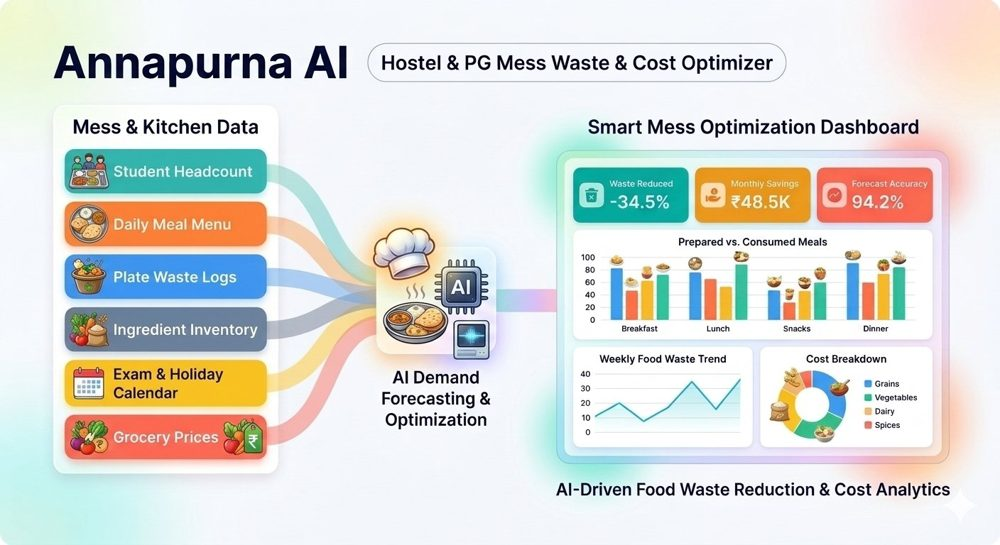

🍛 Annapurna AI — Hostel & PG Mess Waste & Cost Optimizer
A complete end-to-end data science and machine learning system for institutional kitchens.

Project overview & problem statement
Compare leftover food: traditional rule of thumb vs Annapurna AI (simulated benchmark).
The problem
A mess cook must balance two risks: too little food causes complaints and emergency cooking; too much creates cost and waste. Cooks usually rely on experience and a fixed safety margin, but attendance shifts with exams, weekends, festivals, rain, food-delivery habits and the academic calendar.
Technical framing
This is a stochastic inventory (newsvendor) problem: shortage and surplus have unequal costs, so the best quantity is a quantile of predicted demand rather than its mean.Unique approach
- Hyper-local context: exams, weekends, weather and festivals.
- ML forecasting: predicts attendance and dish consumption, not fixed quantities.
- Operational simplicity: simple weighing and logging workflow for cooks and managers.
Annapurna AI tells a hostel cook exactly how much food to cook, so less food is wasted and nobody goes hungry. It is my own project.
How many students will eat, using exams, weather and festivals
A simple sheet tells the cook the exact kilograms
Leftovers are logged so tomorrow’s plan gets better
Main goals
- Forecast attendance and dish consumption instead of using fixed quantities.
- Recommend a food quantity that balances shortage risk against waste.
- Give cooks and managers a simple weigh-and-log routine so the system keeps learning.
Tools & technologies used
Languages
Python, JavaScript
Runtime & server
Node.js (dashboard server, data generation and model training scripts)
Data science & ML
Demand forecasting, feature engineering, quantile-based cost optimisation
Environment
Jupyter Notebook for EDA and models; HTML, CSS and JavaScript dashboard
Project structure
Data, process & methodology

Machine learning architecture
Q* = N_hat × c_hat + z × sigma · N_hat = expected students, c_hat = expected serving per student, sigma = forecast uncertainty, z = safety multiplier set by the chosen quantile (70–95%).
A day in the mess
How to run
Key features, insights & results
Benchmarks
| Metric | Traditional Cook | Linear Model | Annapurna AI |
|---|---|---|---|
| MAE | 8.45 kg | 2.65 kg | 1.85 kg |
| Average food waste | 21.8% | 6.8% | 3.4% |
| Annual savings | ₹0 | ₹49.2 Lakhs | ₹62.4 Lakhs |
| Stockout rate | 1.4% | 0.4% | 0.3% |
| CO2e prevented | 0 Tons | 142 Tons | 185.3 Tons |
Dashboard capabilities
Interactive demonstration
Conclusion & business impact
Conclusion
Annapurna AI treats mess cooking as a stochastic inventory (newsvendor) problem: shortage and surplus cost different amounts, so the best quantity is a quantile of predicted demand, not its mean.
Business impact
- On the simulated benchmark it cut average waste from 21.8% to 3.4%, with fewer stockouts (0.3% vs 1.4%).
- It models annual savings of ₹62.4 Lakhs and 185.3 tons of CO2e prevented.
- The weigh-and-log routine takes about 30 seconds and feeds tomorrow’s plan.